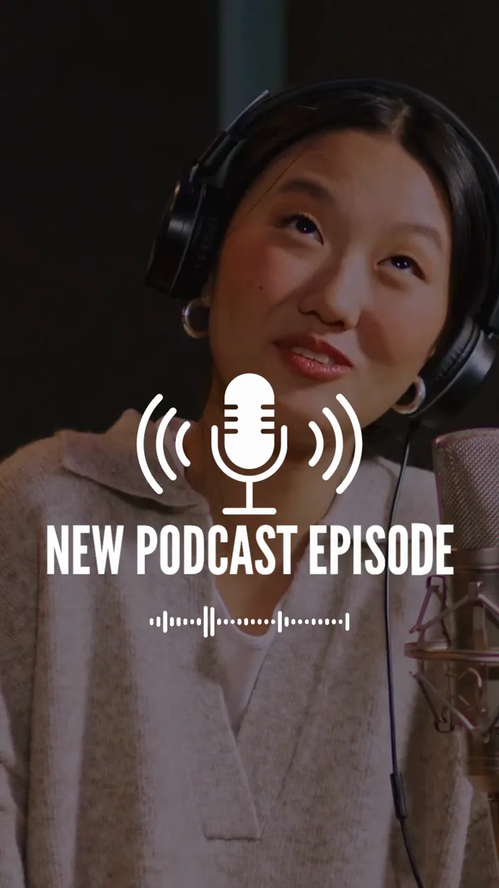

How much does it cost to make a podcast? Marlow, the Thames Valley and London
Recording, editing, video and clips: what a podcast really costs, and how recording locally compares with a London studio.
Read the post →Blog
Behind the scenes of the podcasts we record and produce, and practical advice for planning your own.
Recording, editing, video and clips: what a podcast really costs, and how recording locally compares with a London studio.
Read the post →
A B2B podcast shouldn't be judged on downloads. How to plan guests, content and distribution so every episode builds pipeline, not just plays.
Read the post →
Every long-form episode hides moments that could reach people who will never press play on an hour of video. How to find them, cut them and caption them.
Read the post →
A good business podcast isn't about producing more content. It's about producing something worth paying attention to.
Read the post →
Our new show for founders, marketers and business owners who are thinking about podcasting, or already doing it and not getting the results they hoped for. Recorded in the studio and out on location, so every episode is a showreel.
Read the post →
Riverside is the better tool for recording, and Descript is the better tool for editing. How they compare, where each falls short, and how to decide.
Read the post →
Recording a special episode of Jiu Jitsu Fieldnotes with Paul Busby at the academy, and what location recording teaches you about rooms, sound checks and leaving space for the conversation.
Read the post →